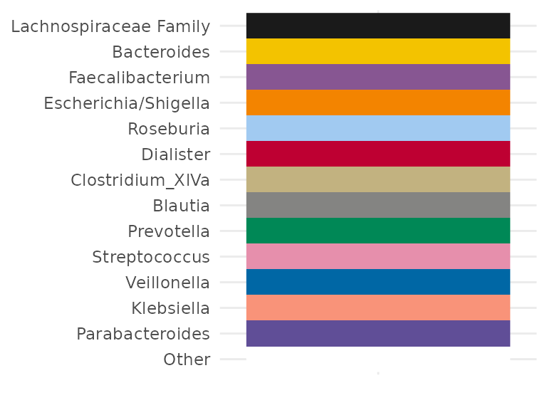

options(width = 100)
library(microViz)
library(phyloseq)
library(ggplot2)
library(patchwork) # for arranging groups of plots
knitr::opts_chunk$set(
fig.height = 6,
fig.width = 9
)
# get example phyloseq data from corncob package and tidy up
pseq <- corncob::ibd_phylo %>%
tax_filter(min_prevalence = 2) %>%
tax_fix() %>%
phyloseq_validate()The comp_barplot function allows you to visualise the taxonomic compositions of your microbiome samples in a flexible, scalable, group-able, and visually appealing way.
Quick example barplot
Visualise the top Genera across all the female samples from this inflammatory bowel disease study dataset. The order of the samples is automatically set by their “bray”-curtis dissimilarity.
By default, the top 8 taxa are shown. These taxa are chosen by their total count abundance across all plotted samples.
pseq %>%
ps_filter(gender == "female") %>%
comp_barplot(tax_level = "Genus") +
coord_flip() # horizontal bars are often more readable
#> Registered S3 method overwritten by 'seriation':
#> method from
#> reorder.hclust vegan
Customising this barplot
The output of comp_barplot can be customised in several ways. See the comment alongside each argument for an explanation of its effect.
pseq %>%
ps_filter(gender == "female") %>%
comp_barplot(
tax_level = "Genus",
label = "DiseaseState", # name an alternative variable to label axes
n_taxa = 15, # give more taxa unique colours
merge_other = FALSE, # split the "other" category to display alpha diversity
bar_width = 0.7, # reduce the bar width to 70% of one row
bar_outline_colour = "grey5" # is the default (use NA to remove outlines)
) +
coord_flip()Other notes:
- Dissimilarity is calculated using only the visibly distinct taxa, to optimise sorting for visual similarity. You can change this by setting
order_with_all_taxa = TRUE, to always use all taxa for similarity sorting. - The colour palette is important, to allow (adjacent) taxa to be distinguished. The palette microViz uses is generated by the
distinct_palettefunction, which starts with the Paired and Dark2 palettes from ColorBrewer and continues with further distinct colours generated at http://medialab.github.io/iwanthue/ (all colors, soft k-means).
Averages, faceting or grouping?
Averaging compositions
Sometimes, to compare microbial compositions across groups, average compositions are presented. However that “group-averaging” approach hides a lot of within-group variation, as well as any imbalance in group sizes.
pseq %>%
ps_select(age, DiseaseState) %>% # avoids lots of phyloseq::merge_samples warnings
ps_filter(DiseaseState != "IBDundef") %>%
phyloseq::merge_samples(group = "DiseaseState") %>%
comp_barplot(
tax_level = "Genus", n_taxa = 12,
bar_width = 0.8
) +
coord_flip() + labs(x = NULL, y = NULL)
#> Warning in asMethod(object): NAs introduced by coercion
Faceting
Faceting is where you show each group on a small subplot.
In the plot below can you see that at minority of UC samples have a high abundance of Escherichia/Shigella or Streptococcus. The merged bars above might have misled you into thinking all UC samples had somewhat increased abundances of these taxa.
pseq %>%
ps_filter(DiseaseState != "IBDundef") %>% # only one sample in this group
# convert DiseaseState into ordered factor to control order of facets
ps_mutate(
DiseaseState = factor(
DiseaseState, levels = c("UC", "nonIBD", "CD"), ordered = TRUE)
) %>%
comp_barplot(
tax_level = "Genus", n_taxa = 15,
bar_outline_colour = NA, facet_by = "DiseaseState"
) +
coord_flip() 
Instead of using the facet_by argument in comp_barplot you can have more control over faceting by doing it yourself afterwards. You can use facet_grid to create row facets.
pseq %>%
ps_filter(DiseaseState != "IBDundef") %>% # only one sample in this group
# convert DiseaseState into ordered factor to control order of facets
ps_mutate(
DiseaseState = factor(
DiseaseState, levels = c("UC", "CD", "nonIBD"), ordered = TRUE)
) %>%
comp_barplot(
tax_level = "Genus", n_taxa = 15,
sample_order = "bray", bar_outline_colour = NA,
) +
facet_grid(
rows = vars(DiseaseState),
scales = "free", space = "free" # these options are critically important!
) +
coord_flip() +
theme(
axis.text.y = element_blank(),
axis.ticks.y = element_blank()
)
Grouping
For even greater control than faceting, comp_barplot allows you to generate separate ggplot objects for each group, whilst maintaining the same taxa colour scheme.
You can assemble these plots into one figure with, for example, the patchwork package, or keep them separate.
Note that the ordering of the samples may differ between facet and group_by approaches. In the group_by method, the ordering of the samples by similarity is done separately for each group, whereas in the facet_by method, similarity-based ordering is done with all samples and then the samples are separated by facet afterwards.
plot_list <- pseq %>%
ps_filter(DiseaseState != "IBDundef") %>%
comp_barplot(
n_taxa = 15, tax_level = "Genus", group_by = "DiseaseState"
)
# Plot them side by side with the patchwork package.
patch <- patchwork::wrap_plots(plot_list, nrow = 1, guides = "collect")
patch & coord_flip() # make all plots horizontal (note: use & instead of +)
Notice how you can theme all plots with the & operator.
See https://patchwork.data-imaginist.com/index.html for more examples of arranging multiple plots.
patch &
coord_flip() & labs(x = NULL, y = NULL) &
theme(
axis.text.y = element_text(size = 5),
legend.text = element_text(size = 8)
) &
plot_annotation(
title = "Microbial composition across disease groups",
caption = "Caption: patchwork is a great package!",
theme = theme(plot.title = element_text(size = 14, face = "bold"))
)
Sorting the barplot
Sorting by similarity
Sorting the samples on compositional barplots by similarity can make patterns in the data much easier to see. Check out this unsorted version of the first barplot in this article.
pseq %>%
ps_filter(gender == "female") %>%
comp_barplot(tax_level = "Genus", sample_order = "default") +
coord_flip() +
ggtitle("Unsorted barcharts are hard to read!")
You can play with the dissimilarity measure (set in sample_order argument) and seriate_method if you like, but the defaults (Bray Curtis and OLO Ward) seem to work pretty well most of the time.
When sorting samples by similarity, the default is to treat the “other” taxa as one group, i.e. when merge_other = TRUE and order_with_all_taxa = FALSE.
If you set order_with_all_taxa = TRUE, samples are sorted BEFORE merging taxa. The resulting sample order is then the same as when merge_other = FALSE.
pseq %>%
ps_filter(gender == "female") %>%
comp_barplot(tax_level = "Genus") +
coord_flip() +
ggtitle("Samples sorted AFTER merging 'other' taxa")
pseq %>%
ps_filter(gender == "female") %>%
comp_barplot(tax_level = "Genus", order_with_all_taxa = TRUE) +
coord_flip() +
ggtitle("Samples sorted BEFORE merging 'other' taxa")
pseq %>%
ps_filter(gender == "female") %>%
comp_barplot(tax_level = "Genus", merge_other = FALSE) +
coord_flip() +
ggtitle("'other' taxa not merged")Sort by 1 taxon
To study the distribution of a single taxonomic group across your samples, you can use ps_arrange (with the .target argument set to “otu_table”) and the ‘default’ sample_order setting in comp_barplot.
pseq %>%
tax_agg("Phylum") %>%
tax_transform("compositional") %>%
ps_arrange(desc(Firmicutes), .target = "otu_table") %>%
comp_barplot(tax_level = "Phylum", sample_order = "default") +
coord_flip()
#> Warning in ps_counts(data = data, warn = TRUE): otu_table of counts is NOT available!
#> Available otu_table contains non-zero values that are less than 1
#> Warning in ps_counts(data = data): otu_table of counts is NOT available!
#> Available otu_table contains non-zero values that are less than 1
Sorting by metadata
Sorting across timepoint groups in another dataset, dietswap.
data("dietswap", package = "microbiome")
ps <- dietswap %>% ps_filter(group == "DI")
# subset to participants/"subjects" with samples for both timepoints
timepoint_groups <- sample_data(ps) %>%
data.frame() %>%
split.data.frame(f = .$timepoint.within.group)
have_both_timepoints <- intersect(timepoint_groups$`1`$subject, timepoint_groups$`2`$subject)
ps <- ps %>% subset_samples(subject %in% have_both_timepoints)
# define grouping variable for plotting
ps <- ps %>% ps_mutate(
plot_groups = interaction(nationality, timepoint.within.group)
)Grouped by both timepoint and another grouping factor, nationality in this example.
times_list <- ps %>%
ps_arrange(timepoint.within.group, nationality, desc(subject)) %>%
comp_barplot(
tax_level = "Genus", n_taxa = 10, sample_order = "default",
group_by = "plot_groups", bar_width = 0.7, label = "subject"
)
times <- wrap_plots(
times_list[c("AAM.1", "AAM.2", "AFR.1", "AFR.2")],
byrow = TRUE, ncol = 2, guides = "collect", heights = c(5, 4)
) &
coord_flip() &
theme(
text = element_text(size = 10),
axis.title = element_blank()
)
times
Same grouping, now showing diversity of taxa within other, with merge_other = FALSE
times_list <- ps %>%
ps_arrange(timepoint.within.group, nationality, desc(subject)) %>%
comp_barplot(
tax_level = "Genus", n_taxa = 10, sample_order = "default",
merge_other = FALSE, bar_outline_colour = "grey10",
group_by = "plot_groups", bar_width = 0.7, label = "subject"
)
times <- wrap_plots(
times_list[c("AAM.1", "AAM.2", "AFR.1", "AFR.2")],
byrow = TRUE, ncol = 2, guides = "collect", heights = c(5, 4)
) &
coord_flip() &
theme(
text = element_text(size = 10),
axis.title = element_blank()
)
times
devtools::session_info()
#> ─ Session info ──────────────────────────────────────────────────────────────────────────────────
#> hash: waning gibbous moon, flag: Cocos (Keeling) Islands, flag: Bulgaria
#>
#> setting value
#> version R version 4.1.2 (2021-11-01)
#> os Ubuntu 20.04.3 LTS
#> system x86_64, linux-gnu
#> ui X11
#> language en
#> collate C.UTF-8
#> ctype C.UTF-8
#> tz UTC
#> date 2021-12-02
#> pandoc 2.7.3 @ /usr/bin/ (via rmarkdown)
#>
#> ─ Packages ───────────────────────────────────────────────────────────────────────────────────────
#> package * version date (UTC) lib source
#> ade4 1.7-18 2021-09-16 [1] Custom
#> ape 5.5 2021-04-25 [1] Custom
#> Biobase 2.54.0 2021-10-26 [1] Bioconductor
#> BiocGenerics 0.40.0 2021-10-26 [1] Bioconductor
#> biomformat 1.22.0 2021-10-26 [1] Bioconductor
#> Biostrings 2.62.0 2021-10-26 [1] Bioconductor
#> bitops 1.0-7 2021-04-24 [1] Custom
#> bslib 0.3.1 2021-10-06 [1] Custom
#> cachem 1.0.6 2021-08-19 [1] Custom
#> callr 3.7.0 2021-04-20 [1] Custom
#> cli 3.1.0 2021-10-27 [1] Custom
#> cluster 2.1.2 2021-04-17 [2] CRAN (R 4.1.2)
#> codetools 0.2-18 2020-11-04 [2] CRAN (R 4.1.2)
#> colorspace 2.0-2 2021-06-24 [1] Custom
#> corncob 0.2.0 2021-03-11 [1] Custom
#> crayon 1.4.2 2021-10-29 [1] Custom
#> data.table 1.14.2 2021-09-27 [1] Custom
#> desc 1.4.0 2021-09-28 [1] Custom
#> devtools 2.4.3 2021-11-30 [1] CRAN (R 4.1.2)
#> digest 0.6.29 2021-12-01 [1] CRAN (R 4.1.2)
#> dplyr 1.0.7 2021-06-18 [1] Custom
#> ellipsis 0.3.2 2021-04-29 [1] Custom
#> evaluate 0.14 2019-05-28 [1] Custom
#> fansi 0.5.0 2021-05-25 [1] Custom
#> farver 2.1.0 2021-02-28 [1] Custom
#> fastmap 1.1.0 2021-01-25 [1] Custom
#> foreach 1.5.1 2020-10-15 [1] Custom
#> fs 1.5.1 2021-11-30 [1] CRAN (R 4.1.2)
#> generics 0.1.1 2021-10-25 [1] Custom
#> GenomeInfoDb 1.30.0 2021-10-26 [1] Bioconductor
#> GenomeInfoDbData 1.2.7 2021-12-01 [1] Bioconductor
#> ggplot2 * 3.3.5 2021-06-25 [1] Custom
#> glue 1.5.1 2021-11-30 [1] CRAN (R 4.1.2)
#> gtable 0.3.0 2019-03-25 [1] Custom
#> highr 0.9 2021-04-16 [1] Custom
#> htmltools 0.5.2 2021-08-25 [1] Custom
#> igraph 1.2.9 2021-11-23 [1] Custom
#> IRanges 2.28.0 2021-10-26 [1] Bioconductor
#> iterators 1.0.13 2020-10-15 [1] Custom
#> jquerylib 0.1.4 2021-04-26 [1] Custom
#> jsonlite 1.7.2 2020-12-09 [1] Custom
#> knitr 1.36 2021-09-29 [1] Custom
#> labeling 0.4.2 2020-10-20 [1] Custom
#> lattice 0.20-45 2021-09-22 [2] CRAN (R 4.1.2)
#> lifecycle 1.0.1 2021-09-24 [1] Custom
#> magrittr 2.0.1 2020-11-17 [1] Custom
#> MASS 7.3-54 2021-05-03 [2] CRAN (R 4.1.2)
#> Matrix 1.3-4 2021-06-01 [2] CRAN (R 4.1.2)
#> memoise 2.0.1 2021-11-26 [1] Custom
#> mgcv 1.8-38 2021-10-06 [2] CRAN (R 4.1.2)
#> microbiome 1.16.0 2021-10-26 [1] Bioconductor
#> microViz * 0.9.0 2021-12-02 [1] local
#> multtest 2.50.0 2021-10-26 [1] Bioconductor
#> munsell 0.5.0 2018-06-12 [1] Custom
#> nlme 3.1-153 2021-09-07 [2] CRAN (R 4.1.2)
#> patchwork * 1.1.1 2020-12-17 [1] Custom
#> permute 0.9-5 2019-03-12 [1] Custom
#> phyloseq * 1.38.0 2021-10-26 [1] Bioconductor
#> pillar 1.6.4 2021-10-18 [1] Custom
#> pkgbuild 1.2.1 2021-11-30 [1] CRAN (R 4.1.2)
#> pkgconfig 2.0.3 2019-09-22 [1] Custom
#> pkgdown 2.0.0 2021-11-30 [1] Custom
#> pkgload 1.2.4 2021-11-30 [1] CRAN (R 4.1.2)
#> plyr 1.8.6 2020-03-03 [1] Custom
#> prettyunits 1.1.1 2020-01-24 [1] Custom
#> processx 3.5.2 2021-04-30 [1] Custom
#> ps 1.6.0 2021-02-28 [1] Custom
#> purrr 0.3.4 2020-04-17 [1] Custom
#> R6 2.5.1 2021-08-19 [1] Custom
#> ragg 1.2.0 2021-10-30 [1] Custom
#> Rcpp 1.0.7 2021-07-07 [1] Custom
#> RCurl 1.98-1.5 2021-09-17 [1] Custom
#> registry 0.5-1 2019-03-05 [1] Custom
#> remotes 2.4.2 2021-11-30 [1] CRAN (R 4.1.2)
#> reshape2 1.4.4 2020-04-09 [1] Custom
#> rhdf5 2.38.0 2021-10-26 [1] Bioconductor
#> rhdf5filters 1.6.0 2021-10-26 [1] Bioconductor
#> Rhdf5lib 1.16.0 2021-10-26 [1] Bioconductor
#> rlang 0.4.12 2021-10-18 [1] Custom
#> rmarkdown 2.11 2021-09-14 [1] Custom
#> rprojroot 2.0.2 2020-11-15 [1] Custom
#> Rtsne 0.15 2018-11-10 [1] Custom
#> S4Vectors 0.32.3 2021-11-21 [1] Bioconductor
#> sass 0.4.0 2021-05-12 [1] Custom
#> scales 1.1.1 2020-05-11 [1] Custom
#> seriation 1.3.1 2021-10-16 [1] Custom
#> sessioninfo 1.2.1 2021-11-02 [1] Custom
#> stringi 1.7.6 2021-11-29 [1] Custom
#> stringr 1.4.0 2019-02-10 [1] Custom
#> survival 3.2-13 2021-08-24 [2] CRAN (R 4.1.2)
#> systemfonts 1.0.3 2021-10-13 [1] Custom
#> testthat 3.1.0 2021-10-04 [1] Custom
#> textshaping 0.3.6 2021-10-13 [1] Custom
#> tibble 3.1.6 2021-11-07 [1] Custom
#> tidyr 1.1.4 2021-09-27 [1] Custom
#> tidyselect 1.1.1 2021-04-30 [1] Custom
#> TSP 1.1-11 2021-10-06 [1] Custom
#> usethis 2.1.3 2021-10-27 [1] Custom
#> utf8 1.2.2 2021-07-24 [1] Custom
#> vctrs 0.3.8 2021-04-29 [1] Custom
#> vegan 2.5-7 2020-11-28 [1] Custom
#> withr 2.4.3 2021-11-30 [1] CRAN (R 4.1.2)
#> xfun 0.28 2021-11-04 [1] Custom
#> XVector 0.34.0 2021-10-26 [1] Bioconductor
#> yaml 2.2.1 2020-02-01 [1] Custom
#> zlibbioc 1.40.0 2021-10-26 [1] Bioconductor
#>
#> [1] /home/runner/work/_temp/Library
#> [2] /opt/R/4.1.2/lib/R/library
#>
#> ──────────────────────────────────────────────────────────────────────────────────────────────────